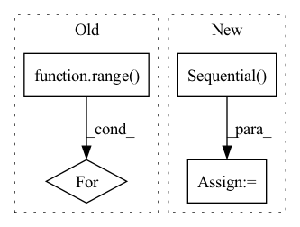

Pattern ID :1665

Before Change
basic_block_layer = []
for _ in range(n_basic_block):
basic_block_layer += [ResidualInResidualDenseBlock(num_init_features, growth_rate)]
self.basic_block = nn.Sequential(*basic_block_layer)
After Change
rrdb_layers = []
for _ in range(23):
rrdb_layers += [ResidualInResidualDenseBlock(64, 32)]
self.residual_residual_dense_blocks = nn.Sequential(*rrdb_layers)
// Second conv layer post residual blocks
self.conv2 = nn.Conv2d(64, 64, kernel_size=3, stride=1, padding=1, bias=False)
In pattern: SUPERPATTERN
Frequency: 3
Non-data size: 4
Instances
Fragment ID: 4325991
Project Name: lornatang/esrgan-pytorch
Commit Name: 8ef58f0f8458d618a99fffa07433927c9b9ef70f
Time: 2020-10-12
Author: liuchangyu1111@gmail.com
File Name: esrgan_pytorch/model.py
M Class Name: Generator
N Class Name: Generator
M Method Name: __init__(2)
N Method Name: __init__(7)
M Parent Class: nn.Module
N Parent Class: nn.Module
M File Name: esrgan_pytorch/model.py
N File Name: esrgan_pytorch/model.py
M Start Line: 99
M End Line: 125
N Start Line: 181
N End Line: 210
'>
Before Change
in_channels = 3
out_channels = 64
for _ in range(num_conv_block):
block += [nn.ReflectionPad2d(1),
nn.Conv2d(in_channels, out_channels, 3),
nn.LeakyReLU(),
nn.BatchNorm2d(out_channels)]
After Change
def __init__(self):
super(Discriminator, self).__init__()
self.features = nn.Sequential(
// Conv0
nn.Conv2d(3, 64, kernel_size=3, stride=1, padding=1, bias=False),
nn.LeakyReLU(negative_slope=0.2, inplace=True),
nn.Conv2d(64, 64, kernel_size=4, stride=2, padding=1, bias=False),
nn.BatchNorm2d(64),
nn.LeakyReLU(negative_slope=0.2, inplace=True),
// Conv1
nn.Conv2d(64, 128, kernel_size=3, stride=1, padding=1, bias=False),
nn.BatchNorm2d(128),
nn.LeakyReLU(negative_slope=0.2, inplace=True),
nn.Conv2d(128, 128, kernel_size=4, stride=2, padding=1, bias=False),
nn.BatchNorm2d(128),
nn.LeakyReLU(negative_slope=0.2, inplace=True),
// Conv2
nn.Conv2d(128, 256, kernel_size=3, stride=1, padding=1, bias=False),
nn.BatchNorm2d(256),
nn.LeakyReLU(negative_slope=0.2, inplace=True),
nn.Conv2d(256, 256, kernel_size=4, stride=2, padding=1, bias=False),
nn.BatchNorm2d(256),
nn.LeakyReLU(negative_slope=0.2, inplace=True),
// Conv3
nn.Conv2d(256, 512, kernel_size=3, stride=1, padding=1, bias=False),
nn.BatchNorm2d(512),
nn.LeakyReLU(negative_slope=0.2, inplace=True),
nn.Conv2d(512, 512, kernel_size=4, stride=2, padding=1, bias=False),
nn.BatchNorm2d(512),
nn.LeakyReLU(negative_slope=0.2, inplace=True),
// Conv4
nn.Conv2d(512, 512, kernel_size=3, stride=1, padding=1, bias=False),
nn.BatchNorm2d(512),
nn.LeakyReLU(negative_slope=0.2, inplace=True),
nn.Conv2d(512, 512, kernel_size=4, stride=2, padding=1, bias=False),
nn.BatchNorm2d(512),
nn.LeakyReLU(negative_slope=0.2, inplace=True)
)
self.avgpool = nn.AdaptiveAvgPool2d((512, 512))
self.classifier = nn.Sequential(
'>
Fragment ID: 4325988
Project Name: lornatang/esrgan-pytorch
Commit Name: 8ef58f0f8458d618a99fffa07433927c9b9ef70f
Time: 2020-10-12
Author: liuchangyu1111@gmail.com
File Name: esrgan_pytorch/model.py
M Class Name: Discriminator
N Class Name: Discriminator
M Method Name: __init__(1)
N Method Name: __init__(2)
M Parent Class: nn.Module
N Parent Class: nn.Module
M File Name: esrgan_pytorch/model.py
N File Name: esrgan_pytorch/model.py
M Start Line: 140
M End Line: 177
N Start Line: 26
N End Line: 74
'>
Before Change
self.conv1 = nn.Conv2d(3, 64, kernel_size=9, stride=1, padding=4)
for i in range(self.n_residual_blocks):
self.add_module("residual_block_" + str(i + 1), ResidualBlock())
self.conv2 = nn.Conv2d(64, 64, kernel_size=3, stride=1, padding=1)
self.bn = nn.BatchNorm2d(64)
After Change
nn.PixelShuffle(upscale_factor=2),
nn.PReLU(),
]
self.upsampling = nn.Sequential(*upsampling)
// Final output layer
self.conv3 = nn.Sequential(
nn.Conv2d(64, 3, kernel_size=9, stride=1, padding=4),
'>
Fragment ID: 4325989
Project Name: lornatang/srgan-pytorch
Commit Name: acd467b89c7ccd5ca556b43a505b5745feda6b21
Time: 2020-09-21
Author: liuchangyu1111@gmail.com
File Name: srgan_pytorch/model.py
M Class Name: Generator
N Class Name: Generator
M Method Name: __init__(2)
N Method Name: __init__(3)
M Parent Class: nn.Module
N Parent Class: nn.Module
M File Name: srgan_pytorch/model.py
N File Name: srgan_pytorch/model.py
M Start Line: 78
M End Line: 100
N Start Line: 24
N End Line: 60